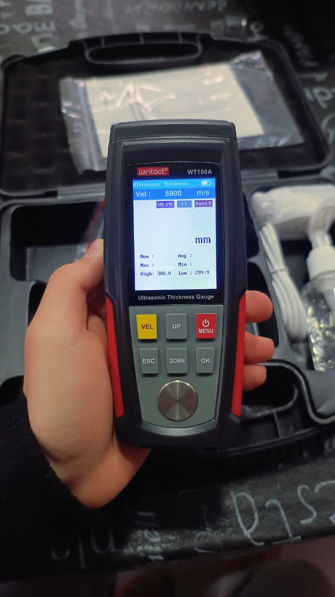
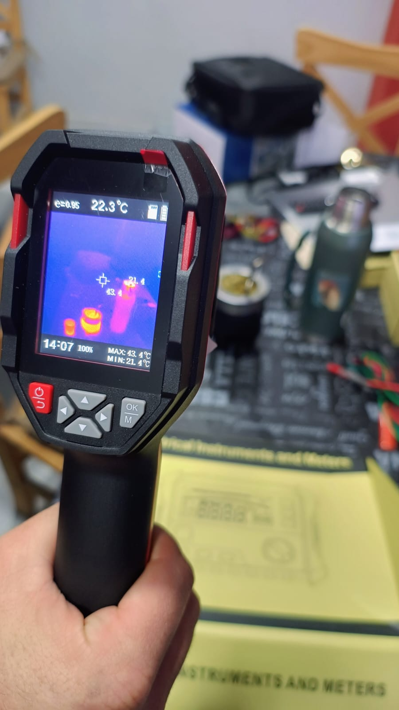
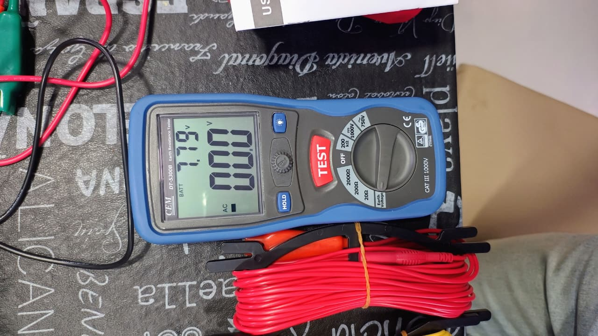
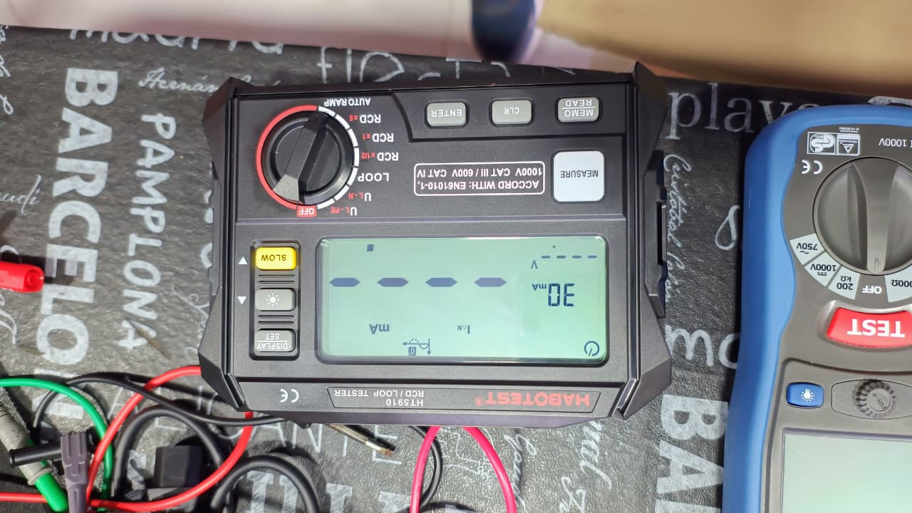
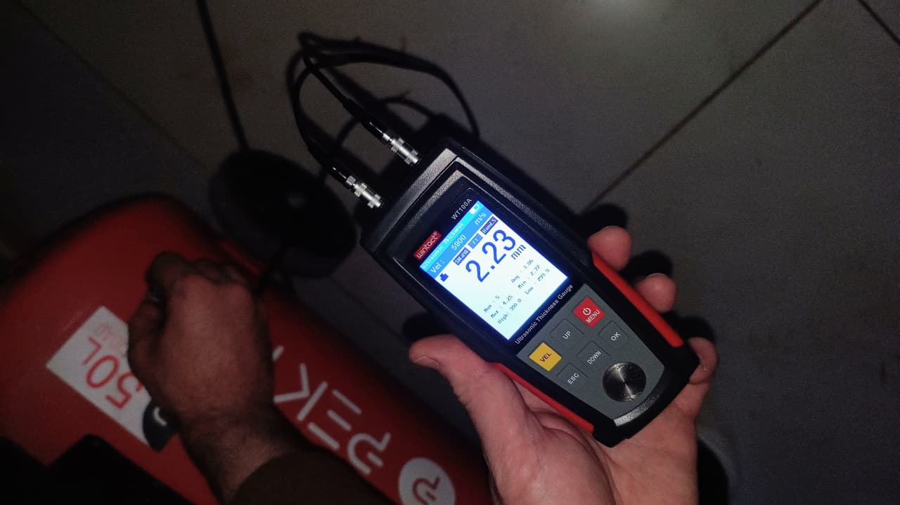
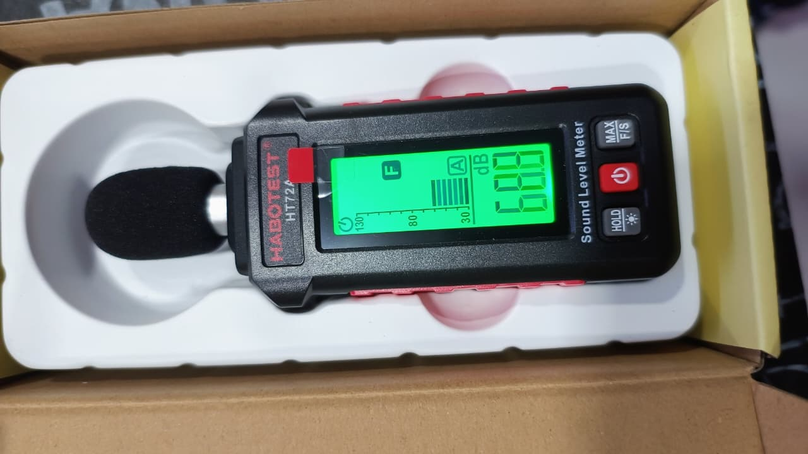
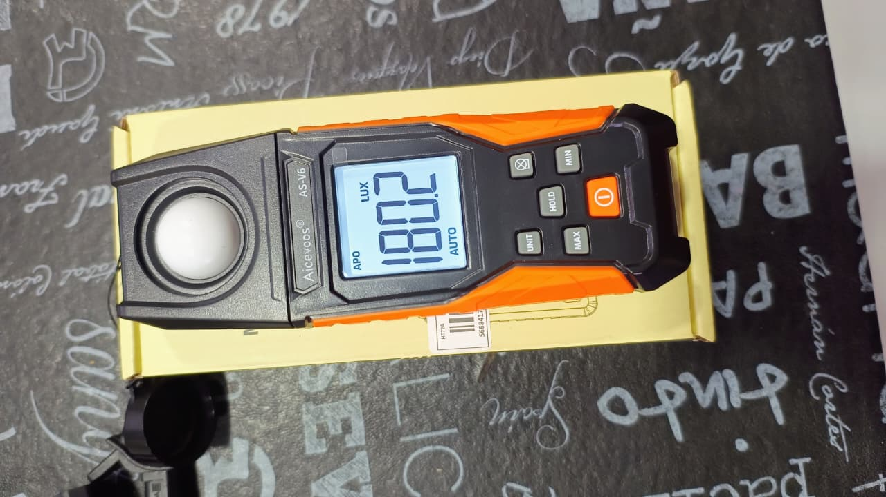

01Inspección de materiales
Medición de espesores
Medición para conocer el espesor de piezas y componentes. Contanos qué material o equipo necesitás evaluar.
Consultar por este servicioMEDICIONES · INSPECCIONES · INGENIERÍA
Mediciones e inspecciones para tus equipos, instalaciones y espacios de trabajo.
Desde una medición puntual hasta la consulta por tu instalación.

QUÉ NECESITÁS EVALUAR
Explorá las especialidades y seleccioná el servicio para preparar tu consulta.

01Inspección de materiales
Medición para conocer el espesor de piezas y componentes. Contanos qué material o equipo necesitás evaluar.
Consultar por este servicio
02Instalaciones eléctricas
Evaluación de la puesta a tierra de una instalación. Consultá por el alcance de la medición para tu establecimiento.
Consultar por este servicio
03Seguridad eléctrica
Consultas sobre mediciones de puesta a tierra y continuidad. Revisemos qué necesita tu instalación.
Consultar por este servicioInspección térmica
Observación de diferencias de temperatura en equipos e instalaciones mediante imágenes térmicas.
Consultar por este servicio
05Inspección de equipos
Consultá por la inspección y certificación de tu equipo. Indicá el tipo de aparato y sus características.
Consultar por este servicio
06Ambiente de trabajo
Medición de niveles sonoros en el entorno de trabajo. Contanos qué sector o actividad querés evaluar.
Consultar por este servicio
07Ambiente de trabajo
Medición de los niveles de iluminación en espacios y puestos de trabajo.
Consultar por este servicioSOBRE LOS SERVICIOS
Cada equipo y cada espacio plantean una consulta diferente. Reuní la información básica para definir qué necesitás medir o inspeccionar.
Seleccioná el servicio que más se acerque a tu necesidad.
Tipo de equipo, ubicación y motivo de la consulta.
Sumá cantidades, características y la fecha que tenés en mente.
PRÓXIMO PASO
Dejanos el contexto de lo que necesitás evaluar. Podés preparar el texto de tu consulta acá.
El canal de contacto estará disponible próximamente. Por ahora, podés copiar tu consulta; no se enviará desde esta página.